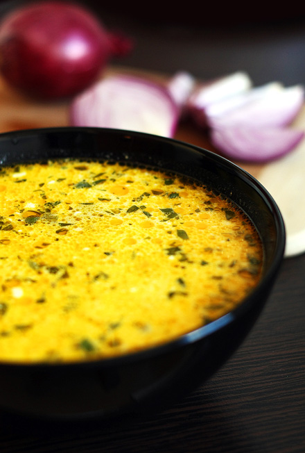

Dresala

Descriere
Reteta ”Dresala” provine din Moldova, zona Piatra Neamt, fiind oferita si preparata de partenerul media al proiectului, Larisa Elena Buduroes, autor si proprietar al blogului PapaBun.com. In zona Iasi se pregateste un preparat asemanator, cu numele Sarbusca, dar care contine, in plus, pastai si mazare.
Din luna martie, derularea activitatilor din cadrul proiectului de responsabilitate sociala se realizeaza cu sprijinul partenerului principal al proiectului, brandul premium Arpis, lansat in 1992. Portofoliul de produse Arpis contine faina de malai, faina din grau, gris, otet, ulei etc.
Ingrediente
- 2 cepe mari
- 1 morcov
- 1 ardei gras mare
- 1 ou
- 500-600g cartofi
- 200ml smantana
- bors dupa gust
- patrunjel, marar, leustean
- sare, piper
- 70ml ulei
- optional:
- 200g pastai
- dovlecel
- 500g iaurt
Pasi preparare
- Se caleste ceapa, se adauga morcovul si pastaiele si se lasa la fiert
- Se adauga ardeiul, dovlecelul, se mai lasa la fiert
- Se adauga cartofii
- Se completeaza cu apa (3/4 din vas)
- Intr'un vas mai inalt se bate oul, se adauga smantana si iaurtul,si se ia cu polonicul zeama fierbinte si se adauga peste smantana (3-4 polonice)
- Se adauga totul in vasul principal, dupa care se adauga borsul dupa gust + sare si piper
- La sfarsit se adauga verdeata si se lasa capacul 15 min